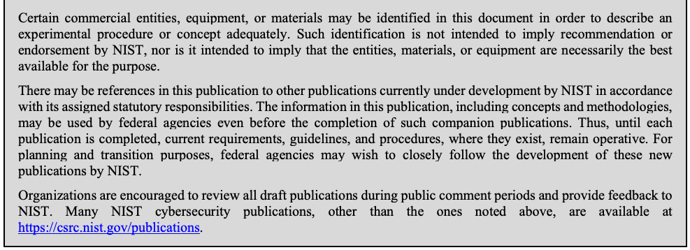
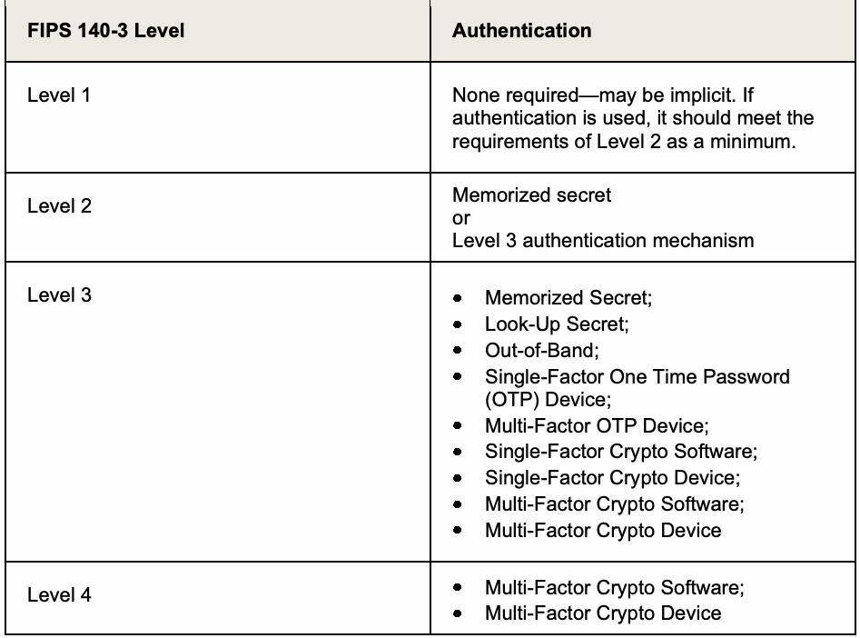

NIST Special Publication · PDF 原文抽出
CMVP Approved Authentication Mechanisms: CMVP Validation Authority Requirements for ISO/IEC 19790 Annex E and ISO/IEC 24579 Section 6.17
CMVP承認の認証メカニズム
NIST SP 800-140E（CMVP Approved Authentication Mechanisms: CMVP Validation Authority Requirements for ISO/IEC 19790 Annex E and ISO/IEC 24579 Section 6.17）の英文と日本語訳を段落ごとに並べた閲覧用ページです。ISO/IEC 19790附属書Eおよび関連試験要件に対する、暗号モジュール検証プログラム（CMVP）の承認認証メカニズムと検証機関の要件を示します。 翻訳は非公式です。要件の確認にはNIST の正式版 PDFを参照してください。
PDF から抽出した原文は原本との照合待ちです。
NIST Special Publication 800-140E
NIST 特別刊行物 800-140E
未レビュー訳CMVP Approved Authentication
CMVP承認済み認証
未レビュー訳Mechanisms:
メカニズム：
未レビュー訳CMVP Validation Authority Requirements for ISO/IEC 19790:2012 Annex E and ISO/IEC 24759 Section 6.17
ISO/IEC 19790:2012 附属書Eおよび ISO/IEC 24759 6.17節に関する CMVP 検証機関の要件
未レビュー訳Kim Schaffer
Kim Schaffer
未レビュー訳This publication is available free of charge from: https://doi.org/10.6028/NIST.SP.800-140E
本刊行物は次のURLから無料で入手できます：https://doi.org/10.6028/NIST.SP.800-140E
未レビュー訳I N F O R M A T I O N S E C U R I T Y
情 報 セ キ ュ リ テ ィ
未レビュー訳NIST Special Publication 800-140E
NIST 特別刊行物 800-140E
未レビュー訳CMVP Approved Authentication
CMVP承認済み認証
未レビュー訳Mechanisms:
メカニズム：
未レビュー訳CMVP Validation Authority Requirements for ISO/IEC 19790
ISO/IEC 19790に関する CMVP 検証機関の要件
未レビュー訳Annex E and ISO/IEC 24579 Section 6.17
附属書Eおよび ISO/IEC 24579 6.17節
未レビュー訳Kim Schaffer
Kim Schaffer
未レビュー訳Computer Security Division Information Technology Laboratory
コンピュータセキュリティ部 情報技術研究所
未レビュー訳This publication is available free of charge from: https://doi.org/10.6028/NIST.SP.800-140E
本刊行物は次のURLから無料で入手できます：https://doi.org/10.6028/NIST.SP.800-140E
未レビュー訳March 2020
2020年3月
未レビュー訳
米国商務省の紋章。盾、鷲、船と星を配し、周囲に「DEPARTMENT OF COMMERCE」「UNITED STATES OF AMERICA」と記されている。
U.S. Department of Commerce Wilbur L. Ross, Jr., Secretary
米国商務長官 Wilbur L. Ross, Jr.
未レビュー訳National Institute of Standards and Technology
米国国立標準技術研究所
未レビュー訳Walter Copan, NIST Director and Under Secretary for Standards and Technology
NIST所長兼標準技術担当商務次官 Walter Copan
未レビュー訳Authority
権限
未レビュー訳This publication has been developed by NIST in accordance with its statutory responsibilities under the Federal Information Security Modernization Act (FISMA) of 2014, 44 U.S.C. § 3551 et seq., Public Law (P.L.) 113-283. NIST is responsible for developing information security standards and guidelines, including minimum requirements for federal information systems, but such standards and guidelines shall not apply to national security systems without the express approval of appropriate federal officials exercising policy authority over such systems. This guideline is consistent with the requirements of the Office of Management and Budget (OMB) Circular A-130.
本刊行物は、2014年連邦情報セキュリティ近代化法（FISMA）、44 U.S.C. § 3551 et seq.、公法（P.L.）113-283に基づく法定責務に従ってNISTが策定した。NISTは、連邦情報システムの最低要件を含む情報セキュリティ標準およびガイドラインの策定を担う。ただし、適切な政策権限を有する連邦当局者の明示的な承認がない限り、これらの標準およびガイドラインは国家安全保障システムには適用されない。本ガイドラインは、行政管理予算局（OMB）通達 A-130 の要件に整合している。
未レビュー訳Nothing in this publication should be taken to contradict the standards and guidelines made mandatory and binding on federal agencies by the Secretary of Commerce under statutory authority. Nor should these guidelines be interpreted as altering or superseding the existing authorities of the Secretary of Commerce, Director of the OMB, or any other federal official. This publication may be used by nongovernmental organizations on a voluntary basis and is not subject to copyright in the United States. Attribution would, however, be appreciated by NIST.
本刊行物のいかなる記述も、法定権限に基づき商務長官が連邦機関に義務付け、拘束力を持たせた標準およびガイドラインに反するものと解釈してはならない。また、本ガイドラインは、商務長官、OMB局長、その他の連邦当局者が有する既存の権限を変更または置き換えるものと解釈してはならない。本刊行物は非政府組織が任意に利用でき、米国では著作権の対象ではない。ただし、NISTへの帰属表示を歓迎する。
未レビュー訳National Institute of Standards and Technology Special Publication 800-140E Natl. Inst. Stand. Technol. Spec. Publ. 800-140E, 9 pages (March 2020) CODEN: NSPUE2
国立標準技術研究所 特別刊行物 800-140E、Natl. Inst. Stand. Technol. Spec. Publ. 800-140E、9ページ（2020年3月）、CODEN: NSPUE2
未レビュー訳This publication is available free of charge from: https://doi.org/10.6028/NIST.SP.800-140E
本刊行物は次のURLから無料で入手できます：https://doi.org/10.6028/NIST.SP.800-140E
未レビュー訳Certain commercial entities, equipment, or materials may be identified in this document in order to describe an experimental procedure or concept adequately. Such identification is not intended to imply recommendation or endorsement by NIST, nor is it intended to imply that the entities, materials, or equipment are necessarily the best available for the purpose. There may be references in this publication to other publications currently under development by NIST in accordance with its assigned statutory responsibilities. The information in this publication, including concepts and methodologies, may be used by federal agencies even before the completion of such companion publications. Thus, until each publication is completed, current requirements, guidelines, and procedures, where they exist, remain operative. For planning and transition purposes, federal agencies may wish to closely follow the development of these new publications by NIST. Organizations are encouraged to review all draft publications during public comment periods and provide feedback to NIST. Many NIST cybersecurity publications, other than the ones noted above, are available at https://csrc.nist.gov/publications.
原本の表画像

実験手順または概念を適切に説明するため、本書では特定の商業組織、機器、または材料を明示する場合がある。このような明示は、NISTによる推奨または承認を意味するものではなく、また当該組織、材料、機器が目的に最適な選択肢であることを意味するものでもない。本刊行物では、NISTが割り当てられた法定責務に従って現在策定中の他の刊行物を参照する場合がある。これらの関連刊行物が完成する前であっても、連邦機関は本刊行物の情報（概念および方法論を含む）を利用できる。したがって、各刊行物が完成するまでは、現行の要件、ガイドライン、手順が存在する場合、それらは引き続き有効である。計画および移行のため、連邦機関はNISTによるこれら新刊行物の策定状況を注意深く確認するとよい。組織には、公開コメント期間中にすべての草案を確認し、NISTに意見を提出することが推奨される。上記に記載したものを除く多くのNISTサイバーセキュリティ刊行物は、https://csrc.nist.gov/publications から入手できる。
未レビュー訳Comments on this publication may be submitted to: National Institute of Standards and Technology Attn: Computer Security Division, Information Technology Laboratory 100 Bureau Drive (Mail Stop 8930) Gaithersburg, MD 20899-8930 Email: sp800-140-comments@nist.gov
本刊行物へのコメントは、次の宛先に提出できます：National Institute of Standards and Technology, Attn: Computer Security Division, Information Technology Laboratory, 100 Bureau Drive (Mail Stop 8930), Gaithersburg, MD 20899-8930, Email: sp800-140-comments@nist.gov
未レビュー訳All comments are subject to release under the Freedom of Information Act (FOIA).
すべてのコメントは、情報公開法（FOIA）に基づく公開の対象となる。
未レビュー訳Reports on Computer Systems Technology
コンピュータシステム技術に関する報告書
未レビュー訳The Information Technology Laboratory (ITL) at the National Institute of Standards and Technology (NIST) promotes the U.S. economy and public welfare by providing technical leadership for the Nation’s measurement and standards infrastructure. ITL develops tests, test methods, reference data, proof of concept implementations, and technical analyses to advance the development and productive use of information technology. ITL’s responsibilities include the development of management, administrative, technical, and physical standards and guidelines for the cost-effective security and privacy of other than national security-related information in federal information systems. The Special Publication 800-series reports on ITL’s research, guidelines, and outreach efforts in information system security, and its collaborative activities with industry, government, and academic organizations.
国立標準技術研究所（NIST）の情報技術研究所（ITL）は、米国の計測および標準インフラに技術的なリーダーシップを提供し、米国経済と公共の福祉を促進する。ITLは、情報技術の発展と生産的な利用を推進するため、試験、試験方法、参照データ、概念実証実装、技術分析を開発する。ITLは、連邦情報システムにおける国家安全保障関連以外の情報について、費用対効果の高いセキュリティとプライバシーを実現するための管理、運用、技術、物理的な標準およびガイドラインの策定を担う。特別刊行物800シリーズは、情報システムセキュリティに関するITLの研究、ガイドライン、普及活動、および産業界、政府、学術機関との協力活動を報告する。
未レビュー訳Abstract
要約
未レビュー訳NIST Special Publication (SP) 800-140E replaces the approved authentication mechanism requirements of ISO/IEC 19790 Annex E and ISO/IEC 24759 paragraph 6.17. As a validation authority, the Cryptographic Module Validation Program (CMVP) may supersede ISO/IEC 19790 Annex E and ISO/IEC 24759 paragraph 6.17 in its entirety with its own list of approved authentication mechanisms.
NIST 特別刊行物（SP）800-140Eは、ISO/IEC 19790 附属書Eおよび ISO/IEC 24759 6.17項の承認済み認証メカニズム要件に置き換わる。検証機関として、暗号モジュール検証プログラム（CMVP）は、ISO/IEC 19790 附属書Eおよび ISO/IEC 24759 6.17項の全体に置き換えて、独自の承認済み認証メカニズム一覧を定めることができる。
未レビュー訳Keywords
キーワード
未レビュー訳authentication; Cryptographic Module Validation Program; CMVP; FIPS 140 testing; FIPS 140; ISO/IEC 19790; ISO/IEC 24759; testing requirement; vendor evidence; vendor documentation.
認証；暗号モジュール検証プログラム；CMVP；FIPS 140試験；FIPS 140；ISO/IEC 19790；ISO/IEC 24759；試験要件；ベンダー証拠；ベンダー文書。
未レビュー訳Audience
対象読者
未レビュー訳This document is focused toward the vendors, testing labs, and CMVP for the purpose of addressing authentication issues in cryptographic module design, manufacture, and testing.
本書は、暗号モジュールの設計、製造、試験における認証の課題に対処することを目的として、ベンダー、試験機関、CMVPを対象とする。
未レビュー訳Table of Contents
目次
未レビュー訳1 Scope — 1
1 適用範囲 — 1
未レビュー訳2 Normative references — 1
2 規範的参照 — 1
未レビュー訳3 Terms and definitions — 1
3 用語と定義 — 1
未レビュー訳4 Symbols and abbreviated terms — 1
4 記号および略語 — 1
未レビュー訳5 Document organization — 2
5 文書の構成 — 2
未レビュー訳5.1 General — 2
5.1 一般 — 2
未レビュー訳5.2 Modifications — 2
5.2 変更 — 2
未レビュー訳6 CMVP-approved authentication mechanism requirements — 2
6 CMVP承認済み認証メカニズムの要件 — 2
未レビュー訳6.1 Purpose — 2
6.1 目的 — 2
未レビュー訳6.2 Approved authentication mechanisms — 2
6.2 承認済み認証メカニズム — 2
未レビュー訳1 Scope
1 適用範囲
未レビュー訳This document specifies the Cryptographic Module Validation Program (CMVP) modifications of the methods to be used by a Cryptographic and Security Testing Laboratory (CSTL) to demonstrate conformance. This document also specifies the modification of methods for evidence that a vendor or testing laboratory provides to demonstrate conformity. The approved sensitive security parameter generation and establishment methods specified in this document supersede those specified in ISO/IEC 19790 Annex E and ISO/IEC 24759 paragraph 6.17.
本書は、暗号・セキュリティ試験機関（CSTL）が適合性を実証するために使用する方法について、暗号モジュール検証プログラム（CMVP）が行う変更を規定する。また、ベンダーまたは試験機関が適合性を実証するために提出する証拠に関する方法の変更も規定する。本書で規定する、承認済みの機微なセキュリティパラメータの生成および確立の方法は、ISO/IEC 19790 附属書Eおよび ISO/IEC 24759 6.17項に規定される方法に優先する。
未レビュー訳2 Normative references
2 規範的参照
未レビュー訳This section identifies the normative references cited as ISO/IEC 19790 and ISO/IEC 24759. The specific editions to be used are ISO/IEC 19790:2012 and ISO/IEC 24759:2017. Please note that the version 19790:2012 referenced here includes the corrections made in 2015.
この節では、ISO/IEC 19790および ISO/IEC 24759として引用する規範的参照を示す。使用する版は ISO/IEC 19790:2012 および ISO/IEC 24759:2017 である。ここで参照する 19790:2012 には、2015年に行われた正誤修正が含まれることに注意されたい。
未レビュー訳National Institute of Standards and Technology (2019) Security Requirements for Cryptographic Modules. (U.S. Department of Commerce, Washington, DC), Federal Information Processing Standards Publication (FIPS) 140-3. https://doi.org/10.6028/NIST.FIPS.140-3
National Institute of Standards and Technology (2019) Security Requirements for Cryptographic Modules. (U.S. Department of Commerce, Washington, DC), Federal Information Processing Standards Publication (FIPS) 140-3. https://doi.org/10.6028/NIST.FIPS.140-3
未レビュー訳3 Terms and definitions
3 用語と定義
未レビュー訳The following terms and definitions supersede or are in addition to ISO/IEC 19790 and ISO/IEC 24759:
以下の用語と定義は、ISO/IEC 19790および ISO/IEC 24759に優先するか、これらに追加される。
未レビュー訳Rate Limiting: Used to control the rate of requests sent or received by a network interface and is used to prevent automated attacks.
レート制限（Rate Limiting）：ネットワークインターフェースが送受信する要求の速度を制御するために使用され、自動化された攻撃を防止する。
未レビュー訳Authenticator: The means used to confirm the identity of a user, processor, or device (e.g., user password or token). Sometimes defined as something you know, something you have or something you are. Referred to as a token in earlier versions of SP 800-63 and in ISO/IEC 19790 and ISO/IEC 24759.
認証器（Authenticator）：ユーザー、プロセッサ、またはデバイスの本人性を確認するために用いる手段（例：ユーザーパスワードまたはトークン）。「知っているもの」「持っているもの」「本人そのもの」と定義されることもある。SP 800-63の旧版および ISO/IEC 19790、ISO/IEC 24759では token と呼ばれる。
未レビュー訳4 Symbols and abbreviated terms
4 記号および略語
未レビュー訳The following symbols and abbreviated terms supersede or are in addition to ISO/IEC 19790 and ISO/IEC 24759 throughout this document:
以下の記号および略語は、本書全体において ISO/IEC 19790および ISO/IEC 24759に優先するか、これらに追加される。
未レビュー訳CCCS
CCCS
未レビュー訳Canadian Centre for Cyber Security
カナダ・サイバーセキュリティセンター
未レビュー訳CMVP
CMVP
未レビュー訳Cryptographic Module Validation Program
暗号モジュール検証プログラム
未レビュー訳CSD
CSD
未レビュー訳Computer Security Division
コンピュータセキュリティ部
未レビュー訳CSTL
CSTL
未レビュー訳Cryptographic and Security Testing Laboratory
暗号・セキュリティ試験機関
未レビュー訳FIPS
FIPS
未レビュー訳Federal Information Processing Standard
連邦情報処理標準
未レビュー訳FISMA
FISMA
未レビュー訳Federal Information Security Management/Modernization Act
連邦情報セキュリティ管理法／近代化法
未レビュー訳FMR
FMR
未レビュー訳False Match Rate. The proportion of zero-effort impostor attempt samples falsely declared to match the compared non-self template
誤合致率（False Match Rate）。ゼロエフォートのなりすまし試行サンプルのうち、比較対象となる本人以外のテンプレートと誤って一致すると判定された割合。
未レビュー訳NIST
NIST
未レビュー訳National Institute of Standards and Technology
国立標準技術研究所
未レビュー訳PAD
PAD
未レビュー訳Presentation Attack Detection. An automated determination of a presentation attack
提示攻撃検知（Presentation Attack Detection）。提示攻撃を自動的に判定すること。
未レビュー訳SP 800-XXX NIST Special Publication 800 series document
SP 800-XXX NIST 特別刊行物800シリーズの文書
未レビュー訳5 Document organization
5 文書の構成
未レビュー訳5.1 General
5.1 一般
未レビュー訳Section 6 of this document replaces the approved authentication mechanisms requirements of ISO/IEC 19790 Annex E and ISO/IEC 24759 paragraph 6.17. While this document serves a different purpose, much of the authentication is purposely meant to align with SP 800-63B, which is an informative reference for module authentication.
本書の6節は、ISO/IEC 19790 附属書Eおよび ISO/IEC 24759 6.17項にある承認済み認証メカニズムの要件に置き換わる。本書は異なる目的を持つが、認証要件の多くは、モジュール認証に関する参考情報である SP 800-63B と意図的に整合させている。
未レビュー訳5.2 Modifications
5.2 変更
未レビュー訳Modifications will follow a similar format as in ISO/IEC 24579. Modifications can include a combination of additions using underline and deletions using strikethrough. If no changes are required, the paragraph will indicate “No change.”
変更は ISO/IEC 24579 と同様の形式に従う。変更には、下線による追加と取り消し線による削除の組み合わせを含めることができる。変更が不要な場合、その段落には「変更なし」と記載する。
6 CMVP-approved authentication mechanism requirements
6 CMVP承認済み認証メカニズムの要件
未レビュー訳6.1 Purpose
6.1 目的
未レビュー訳This document includes all requirements for CMVP-approved authentication mechanisms for operators. Some of these mechanisms may be employed to establish module provided protected communication services; however, these must meet the cryptographic strength requirements of SP 800-140C and SP 800-140D. These requirements supplement the authentication requirements specified in ISO/IEC 19790.
本書には、オペレーター向けの CMVP承認済み認証メカニズムに関するすべての要件が含まれる。これらのメカニズムの一部は、モジュールが提供する保護通信サービスの確立に用いられることがあるが、その場合は SP 800-140C および SP 800-140D の暗号強度要件を満たさなければならない。これらの要件は、ISO/IEC 19790に規定される認証要件を補足する。
未レビュー訳6.2 Approved authentication mechanisms
6.2 承認済み認証メカニズム
未レビュー訳While there are currently no approved authentication mechanisms, allowed authentication mechanisms may be used as indicated in Table 1. Except at level 1, operator authentication acceptance is required to be performed by the module or by the Operating Environment as defined in ISO/IEC 19790.
現在、承認済みの認証メカニズムはないが、表1に示すとおり、許可された認証メカニズムを使用できる。レベル1を除き、オペレーター認証の受け入れは、ISO/IEC 19790で定義されるモジュールまたはオペレーティング環境によって実行される必要がある。
未レビュー訳Table 1 - Authentication mechanism permitted at FIPS 140-3 security levels
表1 - FIPS 140-3 セキュリティレベルで許可される認証メカニズム
未レビュー訳| FIPS 140-3 Level | Authentication |
| Level 1 | None required—may be implicit. If authentication is used, it should meet the requirements of Level 2 as a minimum. |
| Level 2 | Memorized secret or Level 3 authentication mechanism |
| Level 3 | • Memorized Secret; • Look-Up Secret; • Out-of-Band; • Single-Factor One Time Password (OTP) Device; • Multi-Factor OTP Device; • Single-Factor Crypto Software; • Single-Factor Crypto Device; • Multi-Factor Crypto Software; • Multi-Factor Crypto Device |
| Level 4 | • Multi-Factor Crypto Software; • Multi-Factor Crypto Device |
原本の表画像

| FIPS 140-3 レベル | 認証 |
| レベル1 | 不要（暗黙的でもよい）。認証を使用する場合、少なくともレベル2の要件を満たすべきである（should）。 |
| レベル2 | 記憶秘密、またはレベル3の認証メカニズム |
| レベル3 | • 記憶秘密；• ルックアップ秘密；• 帯域外；• 単一要素ワンタイムパスワード（OTP）デバイス；• 多要素OTPデバイス；• 単一要素暗号ソフトウェア；• 単一要素暗号デバイス；• 多要素暗号ソフトウェア；• 多要素暗号デバイス |
| レベル4 | • 多要素暗号ソフトウェア；• 多要素暗号デバイス |
Vendors should use SP 800-63B as a framework for authentication requirements and should provide justification whenever SP 800-63B requirements cannot be met. Testers should review and affirm the vendor documentation. Normative SP 800-63B sections include
ベンダーは、認証要件の枠組みとして SP 800-63B を使用し、SP 800-63B の要件を満たせない場合はその都度根拠を提示すべきである（should）。試験者はベンダー文書を確認し、妥当性を確認すべきである（should）。規範的な SP 800-63B の節は次のとおり。
未レビュー訳•Section 5, Detailed requirements specific to each type of authenticator;
•5節「各種認証器に固有の詳細要件」；
未レビュー訳•Section 6, Lifecycle management;
•6節「ライフサイクル管理」；
未レビュー訳•Section 7, Session Management;
•7節「セッション管理」；
未レビュー訳Informative information to be assessed for each authenticator includes:
各認証器について評価する参考情報には、次が含まれる：
未レビュー訳•Section 8, Threats and Security Considerations; and
•8節「脅威とセキュリティ上の考慮事項」；および
未レビュー訳•Section 10, Usability Considerations.
•10節「ユーザビリティに関する考慮事項」。
未レビュー訳Document Revisions
文書の改訂履歴
未レビュー訳
| 日付 | 変更内容 |